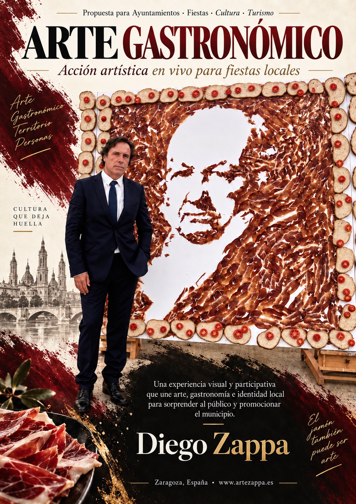
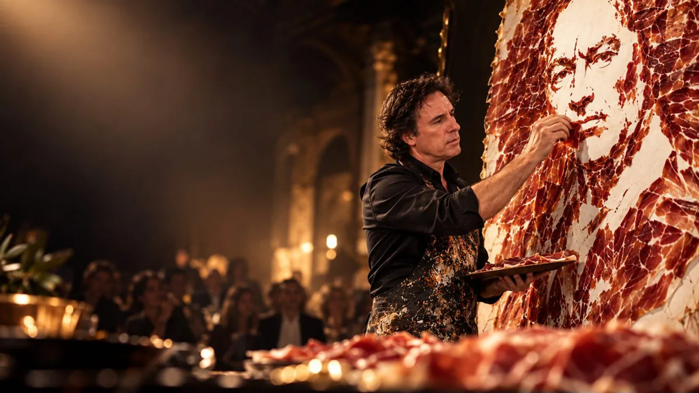
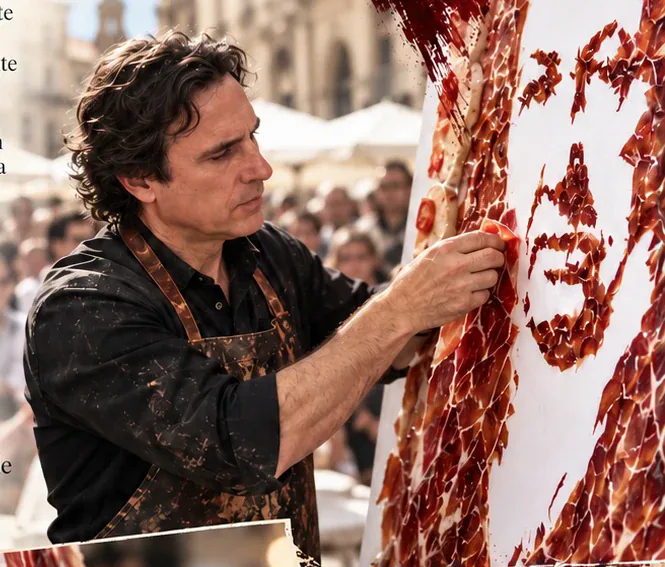
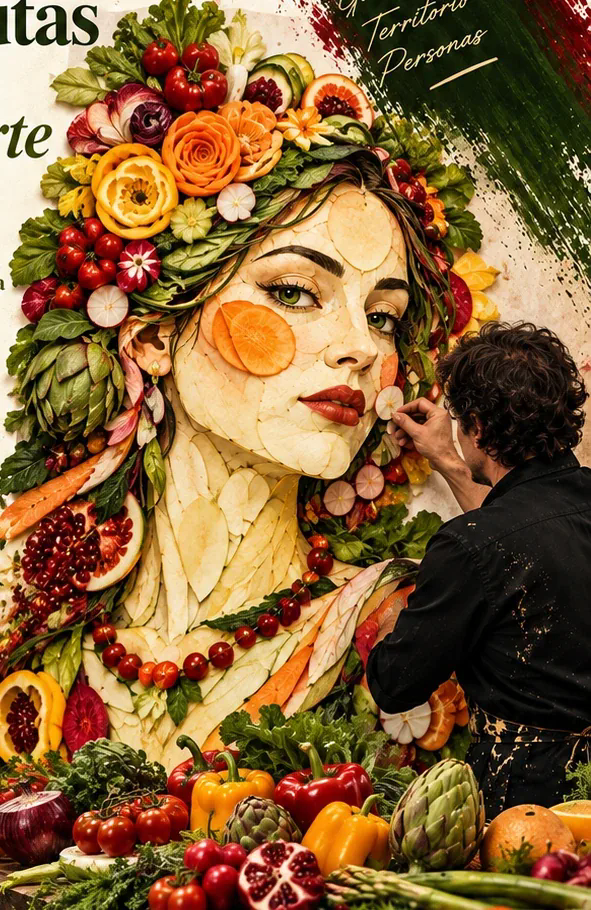
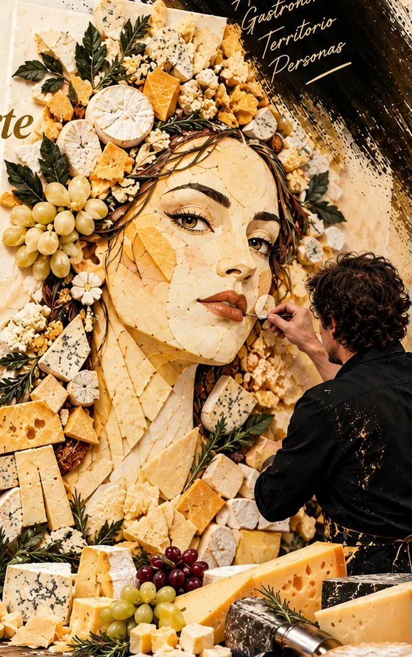
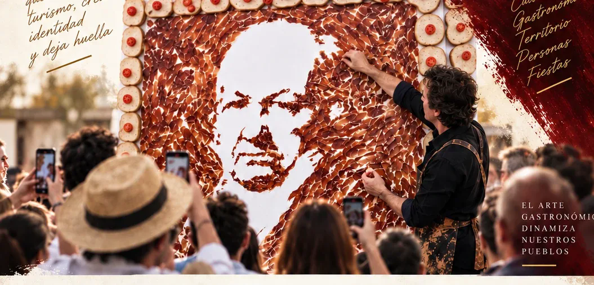
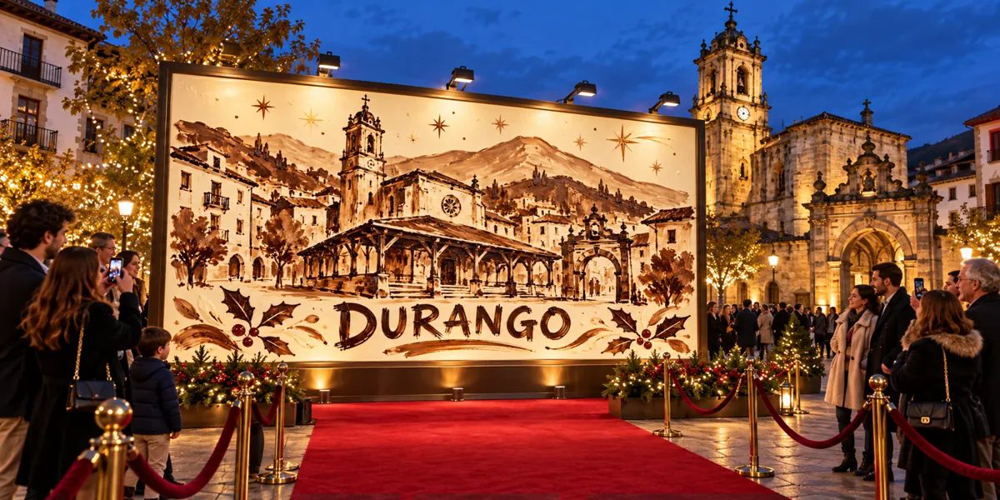
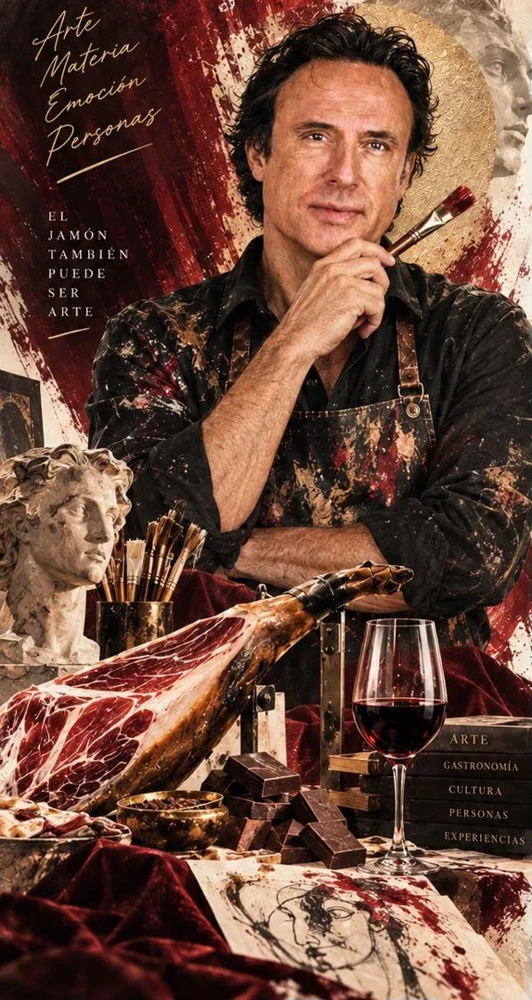

01
Chocolate Art
Murales, mosaicos e instalaciones donde el chocolate se convierte en materia artística. El diseño puede representar el patrimonio de una ciudad, una celebración o la identidad de una marca.
Consultar esta modalidadChocolate, jamón, café, vino, frutas, verduras, queso y otros materiales gastronómicos se convierten en lenguaje artístico. Cada proyecto se diseña específicamente para el lugar, la marca, la institución o el evento.


Murales, mosaicos e instalaciones donde el chocolate se convierte en materia artística. El diseño puede representar el patrimonio de una ciudad, una celebración o la identidad de una marca.
Consultar esta modalidad
Grandes composiciones que unen gastronomía española, cultura y territorio. La obra se crea ante el público y puede inspirarse en la arquitectura, las tradiciones y los símbolos de cada localidad.
Consultar esta modalidadEl café como pigmento para crear pinturas sobre papel de acuarela. Obras inspiradas en el producto, el territorio o la identidad de una marca, realizadas por Diego Zappa para exposiciones, presentaciones y eventos.
Consultar esta modalidadPinturas que utilizan el vino como materia artística. Viñedos, paisaje y patrimonio inspiran obras realizadas por Diego Zappa para bodegas, encuentros de marca y eventos culturales.
Consultar esta modalidad
Retratos y composiciones de gran formato creados con productos hortofrutícolas. Color, textura y producto local para ferias, presentaciones y acciones gastronómicas en directo.
Consultar esta modalidad
El queso se transforma en un medio creativo para retratos, murales y piezas de gran formato. Una propuesta personalizada para queserías, territorios productores y eventos gastronómicos.
Consultar esta modalidad
El proceso creativo forma parte del espectáculo. Una obra que nace en directo, conecta con el lugar y convierte al público en testigo de su transformación.
Cada propuesta comienza con el lugar, el producto y las personas. El diseño y la dinámica se adaptan al evento para convertir su identidad en una creación artística.

Una propuesta de mosaico de chocolate blanco pintado con chocolate negro, inspirada en la basílica de Santa María de Uribarri y el arco de Santa Ana. El proyecto plantea una creación en vivo y una presentación en un espacio emblemático de la villa.
Crear una propuesta para mi ciudad ↗Propuestas para ayuntamientos, fiestas y programación cultural. Patrimonio, arquitectura y gastronomía local como punto de partida.
Acciones artísticas en ferias y presentaciones de producto. La identidad de la marca se integra en una obra creada para la ocasión.
Conceptos para hoteles, recepciones y promoción cultural de España. Obras que crean un diálogo entre gastronomía, cultura y lugar.
Autor del récord Guinness del cuadro de chocolate más grande del mundo.

“No se trata solo de contemplar una obra. Se trata de vivir cómo nace.”Diego Zappa · Arte que conecta
Una idea diseñada alrededor del territorio, producto, marca o celebración.
Composición visual, formato, materiales y experiencia adaptados a cada proyecto.
La creación se convierte en un acontecimiento artístico abierto al público o al equipo.
El resultado permanece como imagen, experiencia compartida y contenido de alto impacto.
Propuestas personalizadas para ayuntamientos, instituciones, empresas, hoteles, marcas, ferias y espacios culturales.
diegozappazgz@gmail.com +34 670 635 659 Cuéntame tu proyecto